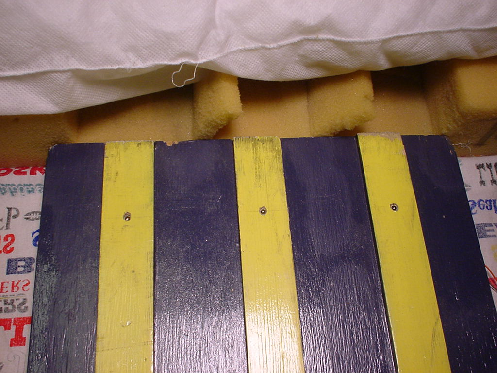
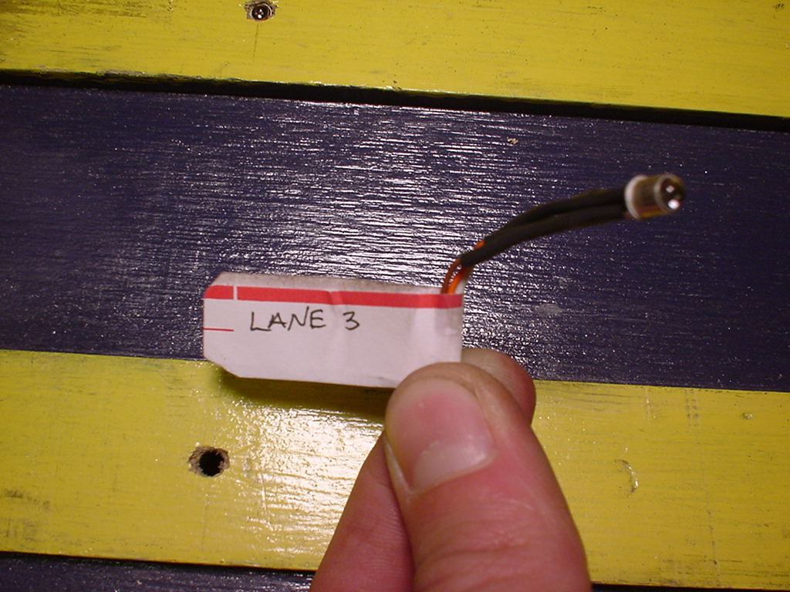

This is the configuration at the end of the track. You can see the light sensors in small holes in the center of the guide strips for each lane.

Here you can see an individual lane sensor that has been removed from the track. I remove the sensors before disassembling the track each time. They are just wedged into the hole in the guide strip from below. There is a small strip of wood (1"x2") across the very end of the track, on the bottom, that keeps the sensors from being crushed between the track and the floor. Another thing you can see in this picture is that I've labeled each lane sensor so I don't have to follow wires all over to find the right one for each lane. At the very top of the picture you can see the sensor for lane 2 installed in the track.

Back to the main Pinewood Timer page